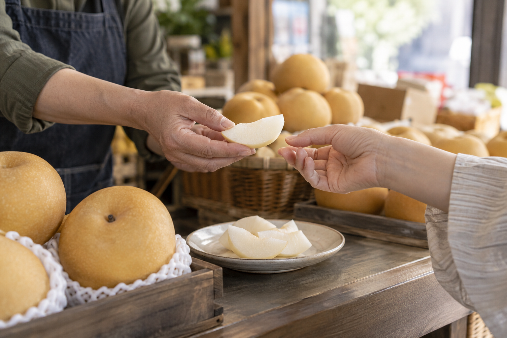

INSIGHT · 2026.09.17
배 한 조각을 맛본 뒤,
질문이 달라집니다
과일가게에서 맛본 작은 한 조각이 오늘 먹을 배를 고르는 말을 조금 더 구체적으로 만듭니다.

퇴근길 과일가게 앞에서 배를 한 번 들어 봅니다. 오늘 저녁에 깎아 먹을 생각인데, 겉모양만으로는 어느 것을 고를지 망설여집니다. 상인이 작은 접시에 놓인 배 한 조각을 권합니다. 손님은 한입 베어 물고 잠깐 씹습니다. 계산대로 향하기 전에 오가는 말도 그만큼 느려집니다.
맛보기 전의 질문은 대개 짧습니다. “이거 달아요?” 하지만 한 조각을 먹고 나면 다른 말을 할 수 있습니다. “방금 먹은 건 씹는 느낌이 좋네요. 오늘 바로 먹어도 이 느낌일까요?” 막연했던 기대가 자기 입에서 나온 말로 바뀝니다.
좋다는 말보다 내가 느낀 말을 남깁니다
누군가는 시원한 과즙을 먼저 느끼고, 누군가는 씹고 난 뒤 입안에 남는 질감에 마음이 갑니다. 같은 조각을 먹어도 꺼내는 말은 다를 수 있습니다. 그러니 시식은 정답을 확인하는 시간이기보다, 내가 좋아하는 지점을 찾아 말해 보는 짧은 시간에 가깝습니다.
가게에서도 그 말을 들으면 설명의 방향을 바꿀 수 있습니다. “달다”는 한마디를 되풀이하기보다 지금 고른 배를 언제 먹을지, 방금 맛본 조각에서 어떤 느낌이 좋았는지 물을 수 있습니다. 손님은 추천을 듣기만 하는 사람이 아니라 고르는 데 필요한 단서를 함께 내놓는 사람이 됩니다.
한 조각을 맛보는 일은 과일을 평가하기보다, 내 취향을 말할 기회를 줍니다.
한입의 느낌을 그대로 가져갈 수는 없습니다
접시의 조각과 집에 가져갈 배는 서로 다른 열매일 수 있습니다. 먹는 때와 보관 상태에 따라서도 느낌은 달라집니다. 그래서 시식 한 번으로 봉지 안의 모든 배를 약속할 수는 없습니다. 다만 지금 내 입에 남은 느낌을 상인에게 전하고, 오늘 먹을 과일을 함께 골라 볼 수 있습니다.
이 글은 특정 가게의 취재나 시식 판매 효과를 기록한 글이 아닙니다. 누구나 떠올릴 수 있는 과일가게 장면을 바탕으로 쓴 생활 에세이입니다. 시식이 없는 가게에서도 “아삭한 쪽을 좋아해요”, “오늘 저녁에 먹을 거예요”처럼 내가 원하는 경험을 먼저 말해 볼 수 있습니다.
배를 담은 봉지를 들고 나오는 길, 손님에게 남는 것은 한 조각의 맛만이 아닙니다. 다음에 과일을 고를 때 다시 꺼낼 수 있는 자기 말 한 줄도 함께 남습니다.